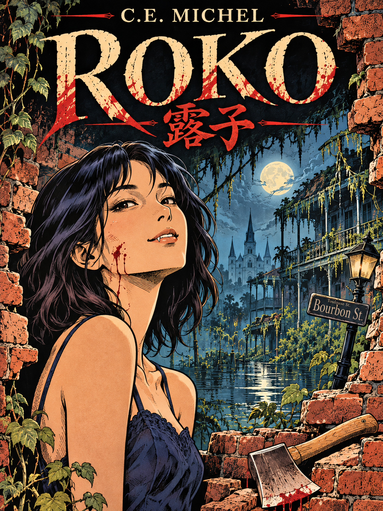

Roko
The world ended. The vampires didn't.
After sleeping for two hundred years, Roko wakes up in the ruins of New Orleans to discover that civilisation has collapsed, humanity is nearly extinct, and finding a decent meal has become surprisingly difficult.
Fortunately, there's Leonard.
Unfortunately for Leonard, Roko is a four-hundred-year-old Japanese vampire with a complicated past, a questionable moral compass, and an alarming tendency to remove people's heads.
Together, they embark on a journey across what remains of America, encountering eccentric immortals, dangerous survivors, and the occasional reminder that humanity probably deserved what happened to it.
But someone from Roko's past is waiting for her. Someone she'd rather kill than see again.
And this time, she intends to get it right.
Roko is a wickedly funny, unexpectedly touching post-apocalyptic vampire novella about love, immortality, and the terrible consequences of falling for someone who considers you a potential snack.
Author: C.E. Michel
Release date: Christmas 2026